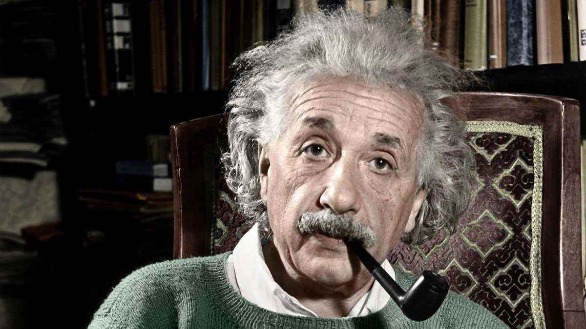

einstein in zijn bureau
Albert Einstein[a] (14 March 1879 – 18 April 1955) was a German-born theoretical physicist who is best known for developing the theory of relativity. Einstein also made important contributions to quantum theory.[1][5] His mass–energy equivalence formula E = mc2, which arises from special relativity, has been called "the world's most famous equation".[6] He received the 1921 Nobel Prize in Physics for ‹See Tfd›his services to theoretical physics, and especially for his discovery of the law of the photoelectric effect.[7]
Born in the German Empire, Einstein moved to Switzerland in 1895, forsaking his German citizenship (as a subject of the Kingdom of Württemberg)[note 1] the following year. In 1897, at the age of seventeen, he enrolled in the mathematics and physics teaching diploma program at the Swiss federal polytechnic school in Zurich, graduating in 1900. He acquired Swiss citizenship a year later, which he kept for the rest of his life, and afterwards secured a permanent position at the Swiss Patent Office in Bern. In 1905, he submitted a successful PhD dissertation to the University of Zurich. In 1914, he moved to Berlin to join the Prussian Academy of Sciences and the Humboldt University of Berlin, becoming director of the Kaiser Wilhelm Institute for Physics in 1917; he also became a German citizen again, this time as a subject of the Kingdom of Prussia.[note 1] In 1933, while Einstein was visiting the United States, Adolf Hitler came to power in Germany. Horrified by the Nazi persecution of his fellow Jews,[8] he decided to remain in the US, and was granted American citizenship in 1940.[9] On the eve of World War II, he endorsed a letter to President Franklin D. Roosevelt alerting him to the potential German nuclear weapons program and recommending that the US begin similar research.